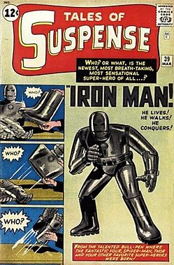

Железный Человек

Желе́зный челове́к (англ. Iron Man); настоящее имя — Э́нтони Э́двард «То́ни» Старк (англ. Anthony Edward "Tony" Stark) — супергерой комиксов издательства Marvel Comics, созданный писателем Стэном Ли, сценаристом Ларри Либером и художниками Доном Хекомruen и Джеком Кирби. Железный человек впервые появился в комиксе Tales of Suspense #39 (март, 1963).
В первоначальном варианте своей биографии Тони Старк, гениальный изобретатель, муж Верналии Лодж и богатейший промышленник с репутацией плейбоя, страдает от ранения, полученного им в плену, где его вынудили разработать для террористов оружие массового поражения. Вместо этого он создаёт высокотехнологичный костюм-броню, с помощью которого сбегает из плена. Позднее Старк улучшает свою броню вооружением и устройствами, созданными на базе ресурсов его компании, и использует доспех, чтобы защищать мир в облике Железного человека, первое время скрывая свою личность.Перейти к разделу «#Биография»
Первоначально Железный человек, будучи порождением Холодной войны и Вьетнамской войны, в частности, был для Стэна Ли средством раскрытия их соответствующих тем и роли американской экономики в борьбе с коммунизмом; со временем в последующих переосмыслениях образа упор стал делаться на проблемы корпоративного криминала и терроризма.Перейти к разделу «#История публикаций»
На протяжении времени публикаций Железный человек связан в первую очередь с командой «Мстители», будучи одним из её сооснователей, и нескольких побочных от неё команд супергероев; его сольная серия, запущенная в мае 1968 года, пережила 5 томов, издаваясь с перерывом в 2008—2012 годах, когда её сменила серия The Invincible Iron Man, вплоть до 2014 года. Впоследствии, с ростом популярности, Железный человек стал персонажем нескольких мультсериалов и мультфильмов, причём как сольных, так и в составе Мстителей. В фильмах медиафраншизы «Кинематографическая вселенная Marvel» (КВМ) его роль исполнял актёр Роберт Дауни-младший.
Впервые образ Железного человека появился в Tales of Suspense #39 (март 1963). Он был создан писателем Стэном Ли, сценаристом Ларри Лейбером и художниками Доном Хеком и Джеком Кирби. 
После создания персонажа была задача дать направление на создание внешнего образа[3]. По словам Джерри Конвея, «характер героя показывал внешнюю невозмутимость даже тогда, когда внутреннее состояние было подобно ране. Стэн создал его таким, что сердце Старка было разорвано буквально. Но когда-то проходит любая боль и наш герой возвращает свой внутренний мир к первоначальному состоянию. Всё это, я считаю, сделало характер интересным, что требовало определённой внешности»[2]. И Стэн Ли взял за основу образ известнейшего в то время «изобретателя, авантюриста, мультимиллиардера, ловеласа и, наконец, психа» — Говарда Хьюза. Он объяснил это так: «Говард Хьюз был одним из самых ярких людей нашего времени. Но он не был сумасшедшим — он был Говардом Хьюзом»[2].
Пока Ли работал над историей героя и спорил с компанией Liber по поводу долгой конкретизации, Дон Хек и Джек Кирби по идеям автора Тони Старка создали обложку для первого номера, а также помощников Железного человека, Пеппер Поттс и Хэппи Хогана. Первоначальный костюм Железного человека был громоздким, покрытый серым углеродо-железным сплавом. Ко второму выпуску броня превратилась в золотую (№ 40). Оригинальный же, титановый, золотисто-красной расцветки костюм впервые был представлен в № 48 Tales of Suspense под авторством Стива Дитко. Как вспоминает Дон Хек: «По сравнению с первой конструкцией, этот был легче, изящнее, чем тот, который был придуман Кирбишем…»[4].
В первых сюжетных линиях Железного человека наблюдалось антикоммунистическое направление, выражающаяся в борьбе главного героя с противниками, родом из Китая, Вьетнама и других стран азиатского региона. Позже Стэн Ли, сожалея о внимании к этой проблеме, перевёл деятельность Старка на помощь армии США, участие в развитии гражданской обороны. Также развивалась история личной жизни Железного человека, например, показанные в серии «Demon in a Bottle» проблемы с пьянством и психическом состоянии.
С выпусков № 59 (ноябрь 1964) до № 99 (март 1968) в серии Tales of Suspense главная роль перешла к другому супергерою, Капитану Америке, вследствие чего позже было сменено и название. После этого Тони Старк пару раз появлялся в небольшой истории вместе с Нэморомruen и несколько раз в собственных и серии «Золотой Мститель»[5], после чего дебютировал в сольном проекте «Непобедимый Железный человек» (май 1968)[6]. После этого пришла истинная слава Железного человека и, как говорил Стэн Ли: «Все комиксы The Invincible Iron Man были выпущены Marvel, после чего повалила груда писем от поклонников, главным образом от женщин, фан-письма, куча фан-писем, и все были адресованы Тони Старку»[2].